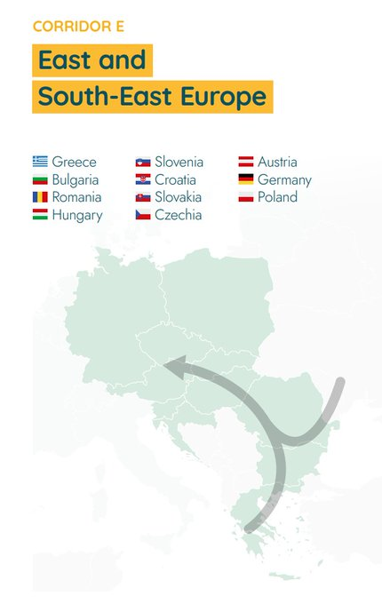

Week 43
H2 View: "European Investment Bank to support REPowerEU Plan with additional €30bn"
H2 Central: "As [internal combustion technology] is predicted to be slowly fading away, there has been a boom around H2 ICE in China to combat pollution and climate change"
H2 View: "German Government grants Hypion €4.9m of funding for hydrogen refuelling station"
Marcus: "Machine intelligence is increasingly being linked to claims about sentience, language processing, and an ability to comprehend and transform natural language into a range of stimuli. We systematically analyze the ability of [an "AI" NLP system] DALL·E 2 to capture 8 grammatical phenomena pertaining to compositionality that are widely discussed in linguistics and pervasive in human language: binding principles and coreference, passives, word order, coordination, comparatives, negation, ellipsis, and structural ambiguity. Whereas young children routinely master these phenomena, learning systematic mappings between syntax and semantics, DALL·E 2 is unable to reliably infer meanings that are consistent with the syntax of the prompts"
Consa: "QED should be the quantized version of Maxwell’s laws, but it is not that at all. QED is a simple addition to quantum mechanics that attempts to justify two experimental discrepancies in the Dirac equation: the Lamb shift and the anomalous magnetic moment of the electron. The reality is that QED is a bunch of fudge factors, numerology, ignored infinities, hocus-pocus, manipulated calculations, illegitimate mathematics, incomprehensible theories, hidden data, biased experiments, miscalculations, suspicious coincidences, lies, arbitrary substitutions of infinite values and budgets of 600 million dollars to continue the game. Maybe it is time to consider alternative proposals. Winter is coming"
"@HydrogenCouncil
Singapore has outlined a #hydrogen strategy in a move that could see the clean energy source supplying half the country's power needs by 2050"
Macgregor: "[T]he military action [Patreus] advocates would not be a NATO intervention, but “a multinational force led by the US and not as a NATO force.”. Petraeus does not explain why U.S. military action is needed. But it’s not hard to guess. The intervention is designed to rescue Ukrainian forces from defeat..
Petraeus’s suggestion confirms two critical insights. First, the perilous state of the Ukrainian Armed Forces. Absent the foreign fighters and Polish soldiers fighting in Ukrainian uniform, Ukraine has little left to withstand the Russian winter offensives. The series of Ukrainian counterattacks over the last 60 to 90 days have cost Ukraine tens of thousands of lives, human capital in uniform that Kiev cannot replace...
Second, it is the 11th hour. The Russian sledgehammer scheduled to fall on the Zelensky regime in the November or December timeframe, or whenever the ground freezes, will crush whatever remains of Ukrainian forces."
H2 Fuel News: "The Loop Energy S1200 (120 kW) hydrogen fuel cell engine claims to have achieved cost parity [with diesel]"
H2 Fuel News: "China is taking global fuel cell vehicle market leadership.. China is already leading the way when it comes to the FCV bus market.. According to the International Energy Agency Advanced Fuel Cells Technology Collaboration Programme, its global share already reached about 95 percent in 2020"
"[Justin Goodman] I think [Fauci] has created a culture at the NIH where this type of dangerous experimentation is encouraged, and oversight of it is diminished to the highest degree possible, where there's basically free reign to do whatever you want, and maybe report it and maybe not, and hope for the best. But that's been happening since 2001 for the war on terror, there were billions of dollars dumped into Fauci's division at the NIH for bioweapons defense and research and a lot of it has turned into this crazy gain-of-function experimentation that likely caused this pandemic. I promise you are going to cause another one if we don't do something about it"
WSJ: "Covid-19 ‘Most Likely’ Leaked From Lab in China, Senate GOP Report Says"
WION: "Rishi Sunak.. reimposes ban of fracking in UK"
There is a strange increase of the race category 'other' for 21/22. Is it because due to racism accusations the police stopped recording that piece of data?
Nearly a thousand people are being shot every year. Shootings increased for 2021 (2022 ain't over yet). Crazy.
Number of ppl shot to death by the police, WaPo data, annual
H2 Central: "Deutsche Bahn and Fortescue Future Industries [to] develop emission-free ammonia hydrogen engine.. both partners are working on modifying diesel engines for locomotives and traction vehicles so that they can be operated with ammonia and hydrogen... In addition to the development of emission-free propulsion technologies, the agreement also provides for cooperation in logistics and supply chains for green fuels"
H2 Central: "Oman Targets $140bln Investment in Green Hydrogen Industry"
"@ehb_europe
New week, new corridor! Corridor E: East and South-East Europe. This corridor offers access to low-cost #hydrogen supply from Eastern & South-Eastern Europe to demand centers along the corridor, covering 10,000 km of H2 pipelines of which ~60% will be repurposed"

"@sevenloI
[DE Econ and Climate Protection Minister] Habeck: [Planning] To Connect Spain-France Hydrogen Pipeline With Germany"
"@SenguptaLab
If I ever quit academia, it will be because of the sheer volume of admin work that is being piled on us PIs. It's non-stop and is coming from all directions including the Univ. Attending training sessions, filling out forms etc is becoming my nth full-time job and I am fed up...
To use the latest iteration of some user-unfriendly software to do admin jobs that used to be done by support staff in the Dept/Univ.. in the name of cost savings and 'efficiency' [sucks].. more of these duties are falling to us. And all of this takes a lot of time"
Consa: "In 1949, the USSR had obtained the atomic bomb thanks to information provided by.. a Manhattan Project researcher with communist sympathies. From then on, espionage accusations became widespread among the American scientific community. Senator McCarthy began a witch hunt in which Oppenheimer was accused of treason and had to submit to trial. The witch hunt ended in 1957, when the Russians sent the Sputnik satellite into space and the US government realized that it needed scientists to create NASA and win the space race"
Consa: "[Dyson said in 2006, as] one of the inventors of QED, I remember that we thought of QED in 1949 as a temporary and jerry-built structure, with mathematical inconsistencies and renormalized infinities swept under the rug. We did not expect it to last more than 10 years before some more solidly built theory would replace it. Now, 57 years have gone by and that ramshackle structure still stands."
u.gov_fl_538()
Out[1]:
(['Ron DeSantis', '10/24/22', 'U. North Florida', 55.0],
['Charlie Crist', '10/24/22', 'U. North Florida', 41.0])
Florida gov debate; Dem candidate tied his points to a few common themes, sold ok. But Desantis held ground and incumbent has advantage.
Forget the Russians - UK is being invaded by Albanians
Arab News: "UK war general tasked with stopping Albanian Channel crossings"
CNBC: "Alphabet misses on earnings as YouTube shrinks; company will cut headcount growth by half in Q4"
That bad eh? #MadMoney
![[-]](twimg/FgDhEuIWAAAN4jB.jpg){kind=link}
H2 Insight: "UK utility Centrica is to use hydrogen made from methane pyrolysis in one of its peaking fossil gas plants, as part of a trial that could eventually see the firm roll out 100% hydrogen-fired power"
H2 Central: "Members of The European Parliament Have Decided to Support a Hydrogen Based Green Transition in The Transport Sector.. Was another important day for hydrogen economy in Europe and globally... [The target of a] maximum distance of 100km between each hydrogen refuelling station, along both the core and comprehensive TEN-T networks, will mean that by the time the infrastructure is in place by end of 2027, up to 1,780 HRS could be available across Europe, suppling up to 1 million ton of hydrogen per year"
Daniel Janin - The Little Green Man Walk #music
I'd get rid of all that quantum bullshit - waste of resources
Alphabet has been missing estimates for a few quarters now
u.yf_eps("GOOG")
Out[1]:
startdatetime epsestimate epsactual
3 2022-10-25T16:02:00.000Z 1.25 1.06
4 2022-07-26T16:02:00.000Z 1.30 1.21
5 2022-04-26T16:09:00.000Z 1.29 1.23
What a strange year.. Added this item to the list.
Of course, cellular networks also came to being thanks to DARPA, due to research they pushed in 1973.
Paper: "Can BRICS De-dollarize the Global Financial System?"
Silk Road Briefing: "The BRICS countries are working on establishing a new reserve currency to better serve their economic interests.. The new currency will be based on a basket of the currencies of the five-nation bloc: the Chinese RMB Yuan, the Russian Ruble, the Indian Rupee, the Brazilian Real and the South African Rand"
u.sen_pa_538()
Out[1]:
(['John Fetterman', '10/24/22', 'YouGov', 51.0],
['Mehmet Oz', '10/24/22', 'YouGov', 49.0])
Created a new category called "junk science". The items below are added.
Later they fudged QED results six more times
Consa: "With the new experimental data from Franken and Liebes.. [t]he probative force of QED was upended... It was a fraud, a scandal. But the creators of QED refused to accept defeat. QED could not be an incorrect theory because that placed them in an indefensible situation. All the developments in the field of theoretical physics that had occurred in the last decade were based on this theory. All the privileges they had obtained after the success of the Manhattan Project were at stake"
Dyson reconciled Feynman, Schwinger QED theories, which were themselves subpar. Infinities are swept under the rug, techniques Dirac thought illegitimate mathematics were used. The post-war rut in physics started in the Shelter Island conference, New York.
Consa: "According to Dyson, [Physicist Enrico] Fermi also did not agree with this new way of conducting science.. Fermi asked how many free parameters he had used to obtain the fit. Smiling after being told 'Four,' Fermi remarked, 'I remember my old friend Johnny von Neumann used to say, with four parameters I can fit an elephant, and with five I can make him wiggle his trunk.'"
Oliver Consa: "Something is rotten in the state of [Quantum Electrodynamics. QED] is considered the most accurate theory in the history of science. However, this precision is based on a single experimental value: the anomalous magnetic moment of the electron (g-factor). An examination of QED history reveals that this value was obtained using illegitimate mathematical traps, manipulations and tricks"
Walker is ahead?
u.sen_ga_538()
Out[1]:
(['Herschel Junior Walker', '10/25/22', 'Moore Information', 46.0],
['Raphael Warnock', '10/25/22', 'Moore Information', 42.0])
"@schumacherbj
When you are ready to switch fields for your Postdoc"
$A^T A$ is surprisingly easy to switch to concurrency.
If $A$ is "tall and skinny" ie $A$ is m x n where n is much smaller than m, there is some trickery using $A^T A$. A can have lots of rows but $A^T A$ has to be n x n -by definition- which is small.
A lot of linear algebra can be paralelized. Even SVD.
German officials have announced the launch of the first hydrogen fuel passenger train fleet in the world this week- 📺Check this article out & more on our NEW YouTube Channel - https://t.co/RPymTgAzpN
— Hydrogen Fuel News + The Latest in Green Hydrogen (@hydrogenfuelnew) October 22, 2022
#BostonConsultingGroup #hydrogennewshttps://t.co/XQZcZHjSpq pic.twitter.com/YUa2FTyNUY
Kissinger: "To be an enemy of America can be dangerous, but to be a friend is fatal"
Davis: "Since Russia long ago destroyed the bulk of Ukraine’s ability to produce military equipment and ammunition, Kyiv is wholly dependent on a non-stop stream of supplies from the West. The greatest threat to Ukraine’s ability to wage war, therefore, is the security of supply routes from their western borders to marshalling locations in the interior of their country. If Putin recognizes this vulnerability, he may mass his forces through Belarus again, but bypass Kyiv completely and strike towards Ukraine’s western borders"
"For the last couple of years Greenpeace has been campaigning to get at least 30% of the world’s oceans protected by 2030. This is the minimum amount of protection experts say is required this decade to allow our oceans to properly recover"
Vid says tigger drone TB too expensive and too lightly armored in comparison to Shahed-136. RU upgraded the latter it uses GLONASS guiding to target, not INS. Delta wing, hard to detect in radar, up to 150 km/h speed. Hardware el cheapo but clearly works well enough.
H2 Central: "Breakthrough Technology Converts Flaring Gas Into Clean Hydrogen – H2-industries"
Post 80s the Turkist ideology was needed as a bulkward against another part of the ideology floated by the fascist state.
H2 Central: "Egypt – SCZONE Signs 7 New Green Fuel Production Agreements, Green Hydrogen and Ammonia"
WION: "Chen Quanguo, architect of the 'Uyghur genocide', ousted from China’s top leadership body"
Makes sense why minorities would be against Wokeness.. Libs overdo this stuff, which can invite backlash, guess who would feel the effects of such backlash?
The hit is likely due to the cancellation of 'Batgirl'. New mgmt at WB is trying to serve customers, no need to be up in arms about it.. Listen to Obama - don't be a buzzkill.
That has to be a hit piece from the Woke-Cuck crowd..
The Daily Beast: "Warner Discovery Is Killing Off Diversity""
Sunak's PM-ship isn't significant because he will bring "South Asian culture" with him in to Number 10. He grew up in UK, he is culturally native... I saw one commentator, white guy, he said about Sunak that "he is probably more English than I am".
Frank Mc Donald And Chris Rae #music
Reuters: "Spain, Portugal and France said on Thursday they will build a sea-based pipeline to carry hydrogen and gas between Barcelona and Marseille"
Talking about UA reconstruction already? Is the war about to be over?
CNBC: "Through my research as a child psychologist, I’ve found that perseverance is the No. 1 soft skill.. [studies say] it is a stronger predictor of success than IQ"
"JCB, developer of the world’s first working construction machines powered by hydrogen, today unveiled another world first for the industry - a mobile hydrogen refueller. JCB is investing £100 million in a project to produce super-efficient hydrogen engines and has already showcased working prototypes of a backhoe loader and Loadall telescopic handler powered by hydrogen"
Has clean syntax, simple to use
"@realpython
rocketry: Modern Scheduling Library for Python #python"
Le Figaro: "Crédit Agricole orders 10,000 hydrogen sedans from manufacturer Hopium [in a deal worth 1.2 billion euros]"
Deep neural nets are used in ad-hoc fashion, shove data from one end, turn the crank, it spits out some stuff from the other end. Their non-scientific nature made them a dead-end route for AGI. Any theoretical connection to their use is a good thing.
TabPFN has a connection to theory, a positive development; they can prove something, an approximation to Bayesian inference. In effect TabPFN is almost an implementation of theory, as FVM can implement CFD.
"TabPFN: A Transformer That Solves Small Tabular Classification Problems in a Second.. TabPFN is radically different from previous ML methods. It is a meta-learned algorithm and it provably approximates Bayesian inference"
H2 Fuel News: "Jericho Energy Ventures hydrogen boiler rated almost 100 percent efficient"
"The US Department of Energy (DOE) has released a draft National Clean Hydrogen Strategy and Roadmap, which sets out three key priorities: the targeting of strategic, high-impact uses of hydrogen; reducing the cost of clean hydrogen to $1/kg by 2031; and focusing on the deployment of at least four regional clean hydrogen hubs"
TASS: "Trade turnover between India, Russia exceeds $18 bln in April-August"
H2 Fuel News: "New hydrogen fuel cell ready hybrid ferries coming to Hamburg"
Yahoo Finance: "POSCO Group CEO, Jeong-woo Choi, to take office as Chairman of worldsteel, leading a great shift for the steel industry to go green.. '.. we will lay the foundation for the commercialization of Hydrogen Reduction (HyREX) technology,' said Choi"
New shelter for migrants in NYC.. On Randalls Island..? Is it like Alcatraz over there?
CR is a Jungian psychologist who uses subliminal marketing to sell products. I'd listen when he talks about culture.
More on heritage and how little it matters. C. Rapaille is off-the-boat French. Despite this 'heritage' his son is not. Excerpt is from his book The Culture Code.
The new eLife approach can work... Every submitted paper is automatically available (not 'rejected', or 'accepted'), publisher assesment is still included with the published paper, others' comments also visible, and the author can resubmit.
I'm thinking incentives.. prestigious publishers can still exist, to the extent they can pull prestigious reviewers, the add-on they provide will be those reviews. Readers would still be able to get a feel of a up/down vote on the paper, but the paper is available either way, available for others to see/comment.
"Scientific Publishing: Peer review without gatekeeping.. eLife is changing its editorial process to emphasize public reviews and assessments of preprints by eliminating accept/reject decisions after peer review"
Reshare #HOR #Ukraine
H2 Central: "War Drives $73bn Spend on Green Hydrogen.... Germany, Morocco and the United States have pledged most, the report finds. Production, on the other hand, will be dominated by the Global South, responsible for 50% of total world production by 2050, with South Africa, Morocco and Chile controlling most (68 million tonnes)"
Climate models are fine 4-5 days ahead on general weather (Ian was predicted, even the Lee County landfall) but flood tech does sound behind. Base data should already be there, terrain, wind, rainfall. The rest is fluid dynamics.
"[S]everal shortcomings in the.. Earth System Model.. [attempting to predict flooding] including those related to model structure, lack of mechanistic representation of key processes, and coarse spatial resolution, pose limits"
CSV/file ref; if URL is ../en/mbl/2022/ ref is gfp-2022.csv
then file itself is here.
Increases in artillery, paramilitary but decrease in active personnel. France is #7 in the global index.
Quick GFP comparison between last year and now, for France
u.gfp_compare('France','../2021/gfp-2021.csv','gfp-2022.csv')
Out[1]:
% Change Previous
Tot Military Personnel (est.) -7.777778 450000.0
Active Personnel -24.074074 270000.0
Paramilitary 20.689655 145000.0
Manpower Composition 25.000000 8.0
Transports 5.932203 118.0
Tanker Fleet -21.739130 23.0
Towed Artillery 775.000000 12.0
Destroyers -9.090909 11.0
My scraper from 2017 still works
Global Firepower Dataset 2022 is out
Another propaganda piece?
Politico.eu: "Russia is running short of long-range missiles, say Western officials"
WION: "Russian fighter jet 'released missile' near British Royal Air Force aircraft over Black Sea"
Bhadrakumar: "The EU has now become a captive market for Big Oil and is left to buy LNG from the US at the asking price, which is six to seven times higher than the domestic price in the US.. The Americans are cocooned in a surreal world of their self-serving narrative that Russia ‘lost’ the war. In the real world, though [.. things look different]"
CNBC: "ASML does not make chips. Instead, it sells $200 million extreme ultraviolet lithography machines to semiconductor manufacturers like Taiwan’s TSMC, which are required to make the most advanced chips"
I had posted abt these guys.. who cashed in? I want a cut
CNBC: "Globally critical chip firm ASML jumps 6% after earnings; sees limited impact from U.S. China curbs"
Collated comments on quantum supremacy (or the lack thereof)
H2 Central: "Egypt to announce ambitious hydrogen strategy... Egypt will present a new energy vision for green hydrogen at the next climate conference in Sharm el-Sheikh this November"
Calling a function instead of passing the function pointer.. rookie
multiprocessing mistake. Pool(func(arg1,arg2)) instead of
Pool(func,args=(arg1,arg2)).. Tsck, tsck, tsck.. Then programmer
wonders why everything is running serially not paralel. You paralized
the mufucka that's why.
H2 Central: "[H2] has potential as a source for electricity in our homes: South Korea opened a hydrogen fuel cell plant last year—the world’s largest—that will supply power to 250,000 households annually... In Japan.. there are 400,000 residential fuel cell units helping to power individual homes"
Wout net I could probably scrounge few dozen cores where I'm if I had to. A board here a board there, an unused laptop... Hook it all up, run.
WION: "Man can't access $1.8mn Bitcoin as he forgot security question answer"
That didn't take long
Al Jazeera: "Pakistan election commission disqualifies former PM Imran Khan"
Arab News: "Ex-PM Khan wins big in Pakistan by-election"
Sean Shamrock McShanahan is asking for 'moral clarity' on Ukraine on Fox News. Is pushing a nuke armed adversary into destroying a country 'moral'?
Al Monitor: "Israel vexed as Australia reverses recognition of 'capital' Jerusalem"
H2 Fuel News: "American Airlines invests in Universal Hydrogen fuel distribution company"
"@MazzucatoM
When [the] @WIRED piece was written, capitalism still had (weak) legs. Now it’s looking for crutches. No better time than this to rethink fundamentals"
Wired: "[2019] What.. infuriated [the economist] Mazzucato was the prevailing narrative that [gov spending] cuts were necessary to boost competitiveness and innovation... 'There was this belief that we didn’t have European Googles and Facebooks because we didn’t subscribe to Silicon Valley’s free market approach. It was just ideology: there was no free market in Silicon Valley.'..
[Mazzucato researched the issue]. The development of Google’s search algorithm, for instance, had been supported by a grant from the National Science Foundation, a US public grant-awarding body... Many other well-known US startups had been funded by the Small Business Innovation Research programme, a public venture capital fund. 'It wasn’t just early research, it was also applied research, early stage finance, strategic procurement,' she says. 'The more I looked, the more I realised: state investment is everywhere.'"
Not "paralize", parallelize
The trade data was 20 million rows, processed in a few mins, parallelized on multicore
"Select some code and translate it into other languages on the spot" #Github
"@mbeisen
far more than a 'reproducibility' crisis, science has a 'making claims that exceed what the data show' crisis"
♪ You don't wanna fuck with a chigga like me ♪
That is legit gangsta Zee Ping Ping
Daam
"Former Chinese President Hu Jintao escorted out of party congress"
{kind=link}